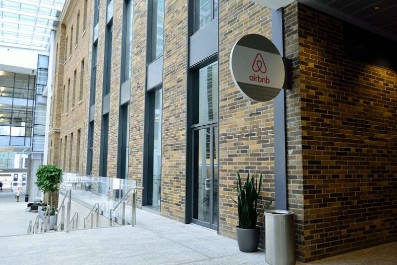

I predicted a group of students’ academic performance based on their behavior in the classroom using a data set collected from Kaggle. I learned various ML techniques including principal component analysis (PCA), principal component regression (PCR), as well as logistic regression. The project also included significant use of data wrangling in Pandas. Visualizations were also employed in the exploratory data analysis sections.
In a group, we used a data set of different stars with distinct features to classify their star type. I learned how to use the classification ML technique and the importance of balancing classes before training a model. Data wrangling was employed in the beginning stages of the project, while visualizations were produced during the exploratory data analysis phase.

I analyzed a data set containing information on different AirBnB listings in Amsterdam so as to find out the highest priced listings per property type and neighborhood, with the results presented as a visualization. I learned how to create data definitions and design functions in a systematic manner.
I cleaned a data set of property listings in Cairo. I learned how to remove duplicate entries, change the data types of columns, break up columns into meaningful subgroups, join tables, as well as edit strings within columns.
I created a dashboard that visualizes the fluctuation of the price of gold over a set range of years, with annotations mentioning relevant historical events, so as to see the relationship between the events and the price of gold. I learned how to create a dashboard, use filters and parameters to enhance the interactive experience with the visualization, and produce annotations.